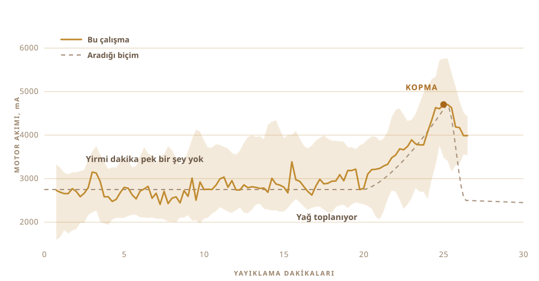

01
Onu yalnızca yemiştim
Benim bildiğim ghee köylerden geliyordu. Yeniden kullanılmış kavanozlarda, onu o kadar uzun zamandır aynı şekilde yapan insanlardan. Orada kimse bunu bir teknik saymıyor.
Dükkandan alınan tenekenin tadına hiç benzemiyor.
Ve ben bir kez bile tek parti yapmamıştım. Sütü ne kadar bekleteceğimi, yoğurdun ne kadar soğuk olması gerektiğini, hazır olduğunda tencerenin nasıl ses çıkarması gerektiğini bilmiyordum.
02
Kremayla değil, yoğurtla başlıyor
Endüstriyel ghee'nin çoğu kremayla başlar. Geleneksel yol bir gün, bazen iki gün daha erken başlar. Krema, aslında kaynatılıp koyulaştırılmış tam yağlı süt, yoğurda dönüştürülür ve bir gece boyunca ekşimeye bırakılır.
O ekşime işin can alıcı yeri, çünkü onu atlayınca elinizde durultulmuş tereyağı kalır. Bizde sade yağ denilen şey de çoğunlukla bu. Güzeldir ama ghee değildir.

03
Tezgahta iki gün
Ilık süt, içine karıştırılmış bir kaşık dünkü yoğurt, sonra bütün gece ona dokunmuyorsunuz ve bakteriler işini yapıyor. Benimki iki gün dışarıda kaldı.
Bu fermantasyon, ticari sürümün atladığı adım da tam olarak bu. Canlı kültürler, çoğunlukla Lactobacillus, laktozun içinden geçip onu laktik aside çeviriyor. Süt koyulaşıyor. Ekşiyor. Sabaha başka bir şey oluyor.
Bütün iyi şeyler buradan geliyor. Parçalanmış laktoz, mideye daha hafif oturuyor. Yağlar ve proteinler daha kolay emiliyor. Bütirik asit, bağırsak çeperinin gerçekten yakıt olarak kullandığı kısa zincirli yağ asidi. Böyle yapılmış ghee'de tatlı kremadan çırpılmış ghee'ye kıyasla daha fazlası var.
Ayurveda çok uzun zamandır tam olarak bu sürümü öneriyor.
Benim söyleyebileceğim şu, kokuyu kültür yapıyor. Bütün bu zahmete girmenin sebebinin büyük kısmı o koku.

04
Yöntemin bir adı var
Bilona. Yoğurt bir tencereye, içine ahşap bir yayık, sonra tereyağı pes edip yukarı çıkana kadar onu ileri geri çeviriyorsunuz.
Yayığı kendim yaptım. İnternette bulabildiklerim tutkallıydı ve hiçbiri tutkalın ne olduğunu söylemiyordu. O şey yarım saat boyunca yemeğinizin içinde duruyor, tahmin yürütmeye niyetim yoktu. Sert ahşap, paslanmaz çelik vidalar, çekmecemde zaten duran bir karıştırıcı miline vidalandı.
Dört kol ve onları dik tutan bir çelik kelepçe. Hepsi vida, yani tekrar sökülüyor.


Yarım saat kadar sürüyor ve bu sürenin çoğunda ilginç hiçbir şey olmuyor. Yani tam da başka birine devretmeyi hayal ettiğiniz türden bir iş.

05
Ben de sordum
Bunu gerçekten bilen insanlar tariflerle çalışmıyor ve hiçbiri benim mutfağımda değildi. Sorular bu yüzden bir sohbet penceresine gitti.
Ne kadar mayalanacak. Yoğurt ne kadar soğuk tutulacak. Sürtünme tencereyi ısıtıp tereyağını bozmadan önce onu ne kadar hızlı çevirebilirsiniz. Her cevap üç yenisini açtı.
Sonra gerçekten sormak istediğim soruyu sordum. Sen yapabilir misin?
Soru artık ghee nasıl yapılır değildi. Benim yerime yapar mısın olmuştu.
06
Canavar
Akülü bir matkap. Çekmeceden ve hırdavatçıdan gelen yayık. Elektronik için plastik bir saklama kabı, omurga olarak bir kesme tahtası ve büyük sarı bir durdurma düğmesi, çünkü motoru olan her şeyde biri bulunmalı.
Neredeyse hiçbir şeye mal olmadı ve öyle de görünüyor. Aslında bütün olay bu.

- MotorAkülü matkap, mengeneyle tutuluyor
- YayıkSert ahşap ve paslanmaz çelik, satın alınmadı yapıldı
- BeyinRaspberry Pi, saniyede bir kaydediyor
- AlgıYayıklamada motor akımı, pişirmede sıcaklık sondası
- DurdurmaTek büyük düğme, akımı kesmek için bağlandı
07
Çevirmek işin kolay kısmı
Yoğurdu çevirmeyi herkes yapar. Zor olan ne zaman duracağını bilmek.
Erken durursanız elinizde koyu bir köpük kalır. Fazla devam ederseniz tereyağını ayranın içine geri dövüp kaybedersiniz. O aralık yağa, sıcaklığa ve günün nasıl gittiğine göre oynuyor.
Bunu kimse saatle ölçmez. Dinlersiniz. Çalkalanma düzgün bir burgaçtan düzensiz bir şaplamaya geçer, elinizi işte o zaman uzatırsınız.

08
Tek duyu, sadece bir tane
Ona bu yüzden tek bir duyu verdim. Motorun ne kadar sert çektiğini izliyor.
Yirmi dakika boyunca hiçbir şey. Yük 2700 mA civarında durup ortalıkta dolaşıyor. Sonra yağ toplanmaya başlıyor ve matkabın daha kalın bir şeyin içinden geçmesi gerekiyor. Yük 4700'e çıkıp bir an orada kalıyor, sonra tereyağı sıvıyı bırakıyor ve yük düşüyor.
Kamera yok, model yok, akıllı hiçbir şey yok. Yükselen ve sonra düşen bir sayı.

09
Kendi kendine durdu
Çalıştı. Ben gidip başka bir şey yaptım, döndüğümde kendini kapatmıştı.
Bulanık yayık ayranının içinde soluk sarı tereyağı taneleri. Ona kimse saati söylemedi. Bunu hissedebildiği tek şeyden çıkardı.

10
Sonra yine eller devrede
Taneleri toplayıp bastırarak bir top yapmak. Soğuk suda yıkamak, su bulanık akmayı bırakana kadar tekrar tekrar.
Geride bıraktığınız her ayran damlası bir sonraki adımda yanar. Bu kısmı otomatikleştirmedim, istemedim de.


11
İkinci duyu
Motor yükü düzeneğe ne zaman duracağını söyledi. Pişirme başka bir problem, çünkü artık bir anı aramıyorsunuz, bir anı tutmaya çalışıyorsunuz.
Tencere bu yüzden elektrikli bir ocağa gidiyor, içinde bir sıcaklık sondası ve sayıyı koyduğunuz yerde tutmak için plakayı açıp kapatan bir güç regülatörü var. 250 F ayarladım, yaklaşık 121 °C, orada bir saat kadar kaldı.
Bir saat boyunca tencere başında bekleyen insanın dikkati dağılır. Regülatör sıkılmıyor.

12
Bir saat boyunca renge bakmak
Tereyağı tencereye giriyor, sonrası çoğunlukla kendi kendine oluyor.
Eriyor. Beyaz ve gürültülü köpürüyor. Su kaynayıp gidiyor ve ses kesiliyor. Süt kuru maddeleri dibe çöküp kahverengileşiyor, koku tereyağından kavrulmuş bir şeye kayıyor. Tencere sessizleştiğinde ve sıvı berrak aktığında iş bitiyor.
Yine de neredeyse hepsini seyrettim, çünkü seyredilmesi güzel bir şey. Ama yaptığım hiçbir şey sonucu değiştirmedi.


13
Ghee
Berrak, kehribar rengi, ve çocukluğumda içinden yediğim kavanozlar gibi kokuyor. Elimdeki tek test buydu ve geçti.

Kavanozlara sıcak ve berrak girdi. Ertesi gün soluk ve taneli bir şekilde donmuştu.
Üstlerine birer etiket yapıştırdım. Etiketteki kelime ghee'nin Nepalcesi, yanındaki kod da sizi bu sayfaya geri getiriyor.

Hayatımda yaptığım ilk parti. Aslında onu ben yapmadım.
14
İkinci seferde dokuz kavanoz
İlk çalışma iki kavanoz çıkardı, hepsi o kadardı. Bu çalışma korkuluğu doldurdu.
Dokuz kavanoz. Kameraya en yakın iki uzun vida kapaklı, ortada altı mandal kapaklı, en arkadaki direğin dibinde de küçük bir tane.

Etiket artık farklı. İlk iki kavanozda üstünde OUR STORY yazan pembe kağıt bir etiket vardı. Bunlar şeffaf film, yani ghee yazının arkasından görünüyor, yanındaki kod da sizi hâlâ bu sayfaya getiriyor.


İlk parti gibi aynı soluk sarıya dondu. Öyle olacağından emin değildim.
15
Bundan sonra ne istiyorum
Şu anda makine iki şey biliyor. Yayıklamayı ne zaman bırakacağını ve hangi sıcaklığı tutacağını.
Sırada ona göz ve kulak vermek var. Bir kamera, köpüğün çökmesini ve kuru maddelerin kahverengileşmesini görsün, ısıyı benim verdiğim bir sayıyı tutmak yerine kendisi seçsin. Ve bir mikrofon, çünkü ghee'nin hazır olduğunu anlatan şeyin büyük kısmı tencerenin sessizleşmesi.
Matkap muhtemelen ikinci bir vardiyayı da kaldırır. Tereyağı tencereye girdikten sonra karıştırılmak istiyor, orada boş boş duran bir motor da zaten var.
Sonra döngü. Mayalanma süresini değiştir, hızı değiştir, çıkanı tat, işe yarayanı sakla, baştan başla. Otuz çalışma sonunda bakmayı hiç akıl etmeyeceğim bir yere varır.
Zaten nereye bakacağımı hiçbir zaman tam olarak bilmiyordum.
Nelerden yapıldığı, ölçümün nerede olduğu ve düzeneğin gerçekte neyi izlediği.